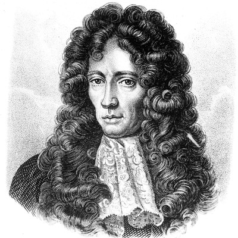
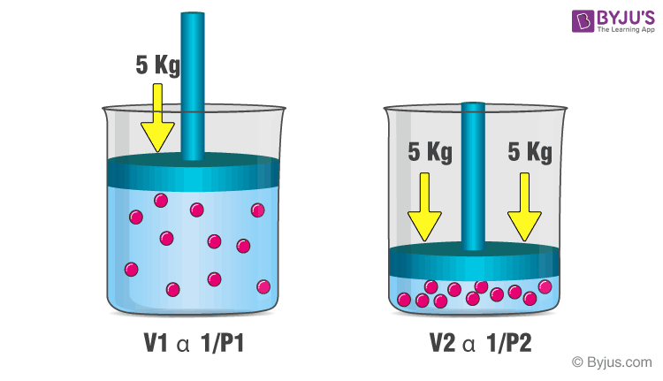

Principe, L. M. (2024, December 27). Robert Boyle | Biography, Contributions, Works, & Facts. Encyclopedia Britannica. https://www.britannica.com/biography/Robert-Boyle
BYJU'S. (2024, June 24). Boyle’s Law - Definition, Equation; Facts with Examples. https://byjus.com/chemistry/boyles-law/
Robert Boyle (born January 25, 1627, Lismore Castle, County Waterford, Ireland—died December 31, 1691, London, England) was an Anglo-Irish natural philosopher and theological writer, a preeminent figure of 17th-century intellectual culture (Principe, 2024).
Boyle’s law states that the pressure is inversely proportional to the volume of the gas at constant pressure (BYJU'S, 2022).
P1V1 = P2V2
When a filled balloon is squeezed, the volume occupied by the air inside the balloon decreases. This is accompanied by an increase in the pressure exerted by the air on the balloon, as a consequence of Boyle’s law. As the balloon is squeezed further, the increasing pressure eventually pops it (BYJU'S, 2022).
Visual Example
This illustration demonstrates the inverse relationship of pressure and volume.
An ideal gas occupying a 2.0 L flask at 760 torrs is allowed to expand to a volume of 6,000 mL. Calculate the final pressure.
Given & Required
Initial Volume (V1 ) = 2 L
Initial Pressure (P1 ) = 760 torrs
Final Volume (V2 ) = 6000 mL = 6 L
To Find: Final Pressure (P 2 ) = ?
Answer:
P 2 = 133.33 ≈ 133 kPa
Hence the final pressure of the gas at of volume 3 L is equivalent to 133 kPa.